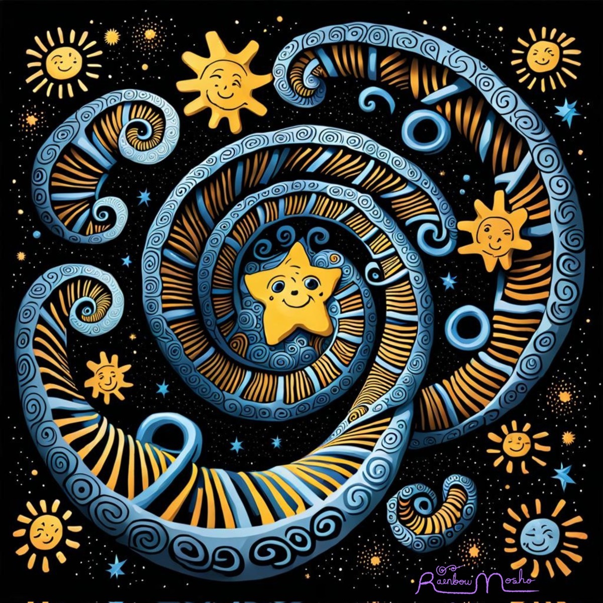

A collection of artifacts exploring piezoelectric bones, stellar nucleosynthesis, and the neurodiversity paradigm. We love you down to your star stuff.
L★S · Love You Down To Your Star StuffFeatured Artwork

Every atom heavier than hydrogen was forged inside a star. The calcium in your bones, the iron in your blood — all of it came from stars that lived and died before the Earth existed. “Star stuff” takes that settled science and reads it as an argument about belonging: if we’re all made of the same stellar matter, then neurodivergent and disabled people belong here fully — not despite our differences, but as part of the universe knowing itself in every possible way.
New here? Start with the shortest version of the whole idea: zines and field guides that read settled science as an argument about belonging, from the cosmic to the lived. How the pieces blend science and neurodivergent and disabled community across scales — difference as the default state of matter, written in the first person plural, held in common, printed free and shared freely.
The whole page, in long form. Sagan and the settled science, the five shorthands, video inspirations, the Resonance and Belonging cards, related traditions across cultures, the Crystal Under Pressure prose poem, and what LYDTYSS is and is not.
On the cosmic origins of who we are, the science of how we carry the universe in our bones, and why neurodivergent and disabled people belong — not despite difference, but as difference. Six sections and eight declarations.
The first stage of psychological safety, made into a creed. Inclusion is owed, not earned — worth before worthiness, with harm the only disqualifier. Where Timothy Clark grounds it in common humanity, Star Stuff goes one floor deeper: you were ★stuff all along, so belonging is constitutive, not conferred.
On piezoelectric matter, star-forged calcium, and the universe that doesn't pathologize its own variation. Six spreads including the full prose poem, diagrams, and the neurodiversity reframe.
The full phrase as a zine — the cosmology of care. What Sagan said, what the elements are, what "down to" means as a direction, and six affirmations across every register.
The paradigm, plainly stated. Two frameworks compared, three key definitions, five myth/fact pairs, five principles, and what it all means in practice — from assessment to self-understanding.
Voices from the community. Open call for contributors — neurodivergent people and those who love them, writing toward what it means to be loved down to your star stuff.
The below to Bone Song's above — the mycelial worldview as an act of love. Networks with no center, decomposition as renewal, and the quiet dark where the realest work gets done. Six spreads with a prose poem, diagrams, a "Not:" refusals set, and reflection questions.
The Sun is the nearest star, so every warm morning is starlight — and the light was always in you. A golden-hour zine on warmth, authenticity, and the counter-deficit turn: the light was always yours, the sky was in the way. Six spreads with diagrams, affirmations, and a "Not:" refusals set.
You are a collective. Mitochondria were once free-living bacteria that never left — every cell you have is a truce between former strangers. A companion to Bone Song, grounding interdependence over independence in verified cell biology, with diagrams, a prose poem, and a "Not:" refusals set.
Variety is resilience; monoculture is the fragile, engineered thing — one blight from collapse. The Cavendish argument across scales: the near-uniform early universe that needed tiny differences to make any structure at all, the Cavendish banana, neurodiversity via the spiky profile and the competency network, and ethodiversity — the more-than-human variety of ways of being. Sameness is a single point of failure; difference is the default state of matter. Seven spreads, five diagrams, a "Not:" refusals set.
Constellations are lines we impose from one vantage point — Orion's stars sit light-years apart at wildly different depths, and the belt only lines up from here. So is the bell curve; so is the border between "disorder" and "difference." The companion argument to the Constellation Field Guide: the error curve borrowed from astronomy and turned into "the average man," the DSM's moving border, epistemic injustice and the words to name ourselves, and why a human-made line is ours to redraw. Eight spreads, five diagrams, a "Not:" refusals set.
The time-delay of starlight as inheritance and accountability. We see stars as they were; some still shining have already gone dark — and their scattered elements become us. A memorial register read as ancestry: Highlander and our own elders, the ones the Cult of Compliance took, and why memory is labor owed forward. Carries Ira Socol and Page & Woodland in full, closing on “forgetting is a tool of white supremacy — memory is the work.” Eight spreads, five diagrams, a “Not:” refusals set.
A guest zine by Helen Edgar (Autistic Realms), in her own voice. One thread followed down three scales — relational quantum mechanics, the cosmic microwave background, and Deleuze — to the same shape: difference comes first, and the baseline is the thing that got built. It ends where the flat line, and even the spiky profile, give way to a constellation of intensities: a self that is dynamic, relational, and never finished. Ten spreads.
David Bowie as a way of being star stuff — defiantly, joyfully weird. Unmasking as authorship rather than exposure, the freedom of many selves, bringing the hidden to the front, and authenticity as our purest freedom. From “Changes” and Space Oddity to Blackstar, difference read as direction, not deficit. Eight spreads, each with an embedded Bowie performance, plus a “Not:” refusals set.
AURORA as a way of being star stuff — the alien who came home by gathering a tribe of Weirdos, not by being cured into fitting. Feeling alien, the mothership's invitation, naming your people, refusing the cure, stimming in the open, and the way back to Earth. Eight spreads, each with an embedded AURORA performance, plus a “Not:” refusals set.
Multispecies justice and more-than-human governance, read as star stuff. Every being at the table — soil, river, beaver, cuckoo, meadow — is forged from the same stellar matter, so the Council of All Beings is the universe convening with itself, and you cannot rank what you are made of. Carries the ethodiversity thread from No. 8 outward: the cosmos varies not only in what it makes but in how its creatures live. Six spreads of argument, then a hydrofeminist coda — the “service provider” critique and the four dimensions of justice, ethodiversity and ethonormativity after Tarragnat, the role-play method (speaking as the soil and the river), the proxy problem and the Umwelt, and Rights of Nature meeting hydrofeminism at Te Awa Tupua, closing on a coda where the council dissolves into flow. Nine spreads, six diagrams, a “Not:” refusals set.
Umwelt as star stuff. Every creature is sealed in its own complete perceptual world — the tick's three signals, the bat's echo, the mantis shrimp's light, the dog's scent-time — and each world is whole, not a partial view of one real world underneath. There is no neutral, default way to sense. The animals do the arguing, so that when minds enter, the point lands as recognition: monotropism is an attention-world, autistic perception a different and complete sky, not a broken copy of a standard one. And when two worlds meet — human and bat, one mind and another — the gap is mutual: the double empathy problem, arrived at without lecturing. Not one correct channel, but mutual translation. Carries the Umwelt thread from No. 14 inward, from von Uexküll through Tarragnat, Manning, Milton, and Despret. Eight spreads, six diagrams, a “Not:” refusals set.
Niche construction as star stuff, and the third of a loose trilogy — how we treat other worlds (No. 14), how we sense them (No. 15), and here, how we build them. Organisms don't just adapt to a fixed environment; they remake it — the beaver's dam, the spider's web — and pass the built world on as ecological inheritance. So the neurodiversity turn is plain: don't fix the mind, change the environment (positive niche construction — there is no “normal” brain in a vat). Stimming is worldmaking; minor worlds and niche communities are real, not lesser; and no niche is neutral — the “default” room was built for one kind of mind, so the fix is reconstruction, not accommodation. Grounded in Odling-Smee & Laland, Armstrong, Tarragnat, Manning, Kadodia & Krueger, and Haraway, and rooted in Stimpunks' own glossary. Eight spreads, six diagrams, a “Not:” refusals set.
Tides and co-regulation as star stuff. The Sun out-masses the Moon 27 million times, yet the Moon runs the tide — because tidal force falls off with the cube of distance, and nearness beats mass. So co-regulation is gravity: a safe-enough nervous system nearby pulls yours into rhythm, at a distance, without touching. Spring and neap tides as aligned or crossed pulls, parallel presence as tidal locking, meerkat mode as a sea that lost its moon, and the ecosystemic turn — the storm is in the weather, not the water. Grounded in the Stimpunks glossary (co-regulation, polyvagal theory, meerkat mode, ARLES, regulation-first), with a hydrofeminist thread carried inward from No. 14. Eight spreads, six diagrams, a “Not:” refusals set.
Knowledge gardening as star stuff — a self-portrait of the whole project. If stimpunks.org is the knowledge garden, starstuff.earth is where it flowers, and these zines are the blooms. A garden, not a stream: evergreen, cross-linked, walkable, grown from lived experience rather than handed down as hierarchy (a rhizome and a mycelial network, after Deleuze & Guattari). The cosmic turn: a knowledge garden is how star stuff comes to know itself — a supernova scatters its forged elements like a seed-head (SN 1006, liberating iron), and the universe knows itself not as a vault but as a garden, by growing and seeding. Held in common, not enclosed: CC BY-SA, print free, share freely — the licence line is the seed dispersal. Grounded in Caulfield, Appleton, Bush, Deleuze & Guattari, Ostrom, and Sagan, and rooted in Stimpunks' own garden and commons. Eight spreads, six diagrams, a cover bed of blooms keyed to the prior zines' colours, a “Not:” refusals set.
Crip time, read through relativity — with a guest coda by Helen Edgar. Physics says there is no universal “now”: simultaneity is relative and clocks run at different rates by speed and gravity (your phone's GPS corrects for it). So the one true clock is a human invention — railway-and-factory standard time, a convention we mistook for a law and then began grading bodies and minds against. Crip time (Zola & Gill, Kafer, Samuels, Price) bends the clock back to fit us instead of bending us to it — the same move as Minor Worlds, now applied to time. Monotropic spiral time and felt time (Helen Edgar, Bergson, Deleuze) are their own real clock, measured in intensity, not minutes; Samuels' time travel, grief time, and broken time hold the hard edges too. The reading: no clock is master, and being “off the clock” is closer to the truth than fitting it. Nine spreads, seven diagrams, a “Not:” refusals set, and a closing coda by Helen Edgar on spiral time.
Fluctuating capacity, read through the physics of phase transitions. Water doesn't get gradually stiffer as it cools — it holds, then flips to ice all at once at a threshold. Same H₂O, different state, and the conditions (not the substance) decide which. So the exhausting question — why could you do it yesterday and not today? — has a clean answer: capacity is a state, not a trait, and you were near a boundary. The hardest part is the crossing itself (threshold anxiety is sensitivity to a real edge — broken thresholds, not broken people); you can be supercooled, held past your limit until one small thing tips everything at once; and recovery slows near the edge, because that's how systems behave. Nothing is fixed or broken — fluid adaptation and weather-bodies, re-adapting to a changed climate. Extends Minor Worlds: change the conditions, not the substance. Grounded in phase-transition physics, Cynthia Kim, Helen Edgar, and Stimpunks' own threshold anxiety. Eight spreads, six diagrams, a “Not:” refusals set.
The spectrum was never a severity scale — after Helen Edgar & Patrick Dwyer. “Spectrum” is the most misread word in our vocabulary: people hear a line from mild to severe. But a real spectrum isn't a ladder — split a star's light and every element signs its own pattern of lines, a fingerprint, which is the only way we know what stars are made of. And the sky's figure was never a line: it's a constellation. The zine follows the escalation from Helen Edgar's brand-new essay — the line of neuronormativity, to the spiky profile (better, but still a grid measured from a baseline), to a constellation of intensities: no rank, no norm, no line. Patrick Dwyer's autism constellation anchors it; the functioning-labels critique shows how the line gatekeeps support (“not disabled enough” vs “too disabled”). Held with care: refusing the line doesn't erase that some of us need far more support — need is not a rank; name it instead. Cashes in the rainbow motif on every page and hands off to the Constellation Field Guide. Eight spreads, spectrum-forward diagrams, a “Not:” refusals set.
Eight patterns in the sky, renamed for what they actually are. The Stimmer, The Deep Diver, The Pattern Seeker, The Flood, The Navigator, The Bridge, The Signal, The Forge — each with SVG diagrams, star data, and full field notes.
Eight elements essential to your body, traced to where the universe forged them — hydrogen from the Big Bang, carbon and oxygen from dying giants, calcium and iron from supernovae, iodine from colliding neutron stars. The periodic table read as autobiography, each entry with an atom diagram, key data, and full field notes.
Eight kinds of life thriving where we assume nothing could — tardigrades that survive by pausing, lichens that never go it alone, vent worms on an economy without sun, fungi that eat radiation, life at home in brine, boiling springs, freezing seas, and solid rock. The condition is named extreme, never the organism: it's about fit, not grit. Each entry with a tolerance diagram, a “to us / to them” table, and full field notes.
Eight worlds in our own solar system that run on rules Earth would call impossible — Europa’s hidden ocean, Titan’s methane rain, Enceladus venting to space, Uranus on its side, Venus with no exit, Pluto reclassified by a vote, Mercury on its own clock, Neptune making its own weather. Not failed Earths: different rules, not broken rules. Each with a world diagram, an “Earth’s rule / its own rule / result” table, and full field notes.
Eight ways to be a star — the long slow burn of a red dwarf, the so-called “failed” brown dwarf, energy pulsing on its own rhythm, a pulsar’s millisecond precision, stars bound in pairs, the red giant’s later phase, the white dwarf’s long afterward, and the brief brilliance of a blue giant. Astronomy’s own names hide verdicts; the sky doesn’t grade. Each entry maps its place on the Hertzsprung–Russell diagram, with a “sounds like / actually” table and full field notes.
Two-sided single sheet. L★S large on the face, full Bone Song poem on the reverse. Risograph-inspired, print-ready. Toggle between sides and print from your browser.
How one phrase compressed itself into a glyph. Five shorthands — LYDTYSS, LYSS, LUSS, L★S, ★stuff — with their etymologies and what each compression preserved and let go.